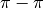

Introduction¶
Overview¶
PSI4 provides a wide variety of quantum chemical methods using state-of-the-art numerical methods and algorithms. Several parts of the code feature shared-memory parallelization to run efficiently on multi-core machines (see Sec. Threading). An advanced parser written in Python allows the user input to have a very simple style for routine computations, but it can also automate very complex tasks with ease.
In this section, we provide an overview of some of the features of PSI4 along with the prerequisite steps for running calculations. Sec. Tutorial provides a brief tutorial to help new users get started. Section Psithon offers further details into the structure of PSI4 input files, and how Python can be mixed with quantum chemistry directives in PSI4. Section Psithon Functions provides more detail on the Python functions provided by PSI4 and discusses some of the higher-level functions such as counterpoise correction, complete-basis-set extrapolation, and running computations on an entire database of molecules at a time. Later sections deal with the different types of computations which can be done using PSI4 (e.g., Hartree–Fock, MP2, coupled-cluster) and general procedures such as geometry optimization and vibrational frequency analysis. The Appendix includes a complete description of all possible input keywords for each module, as well as tables of available basis sets and a listing of the sample input files available under psi4/samples.
The user is urged to examine this directory of sample inputs, as most common types of computations are represented there. For the latest PSI4 documentation, check www.psicode.org.
Citing PSI4¶
The following citation should be used in any publication utilizing the PSI4 program package:
- “Psi4: an open-source ab initio electronic structure program,” J. M. Turney, A. C. Simmonett, R. M. Parrish, E. G. Hohenstein, F. Evangelista, J. T. Fermann, B. J. Mintz, L. A. Burns, J. J. Wilke, M. L. Abrams, N. J. Russ, M. L. Leininger, C. L. Janssen, E. T. Seidl, W. D. Allen, H. F. Schaefer, R. A. King, E. F. Valeev, C. D. Sherrill, and T. D. Crawford, WIREs Comput. Mol. Sci., (2011) (doi: 10.1002/wcms.93)
Depending on the particular modules used, the user may also wish to cite some of the following references for theoretical, algorithmic, or implementation contributions specific to PSI4 (in addition to appropriate references for the underlying theory):
DCFT
- “Density Cumulant Functional Theory: First Implementation and Benchmark Results for the DCFT-06 Model,” A. C. Simmonett, J. J. Wilke, H. F. Schaefer, and W. Kutzelnigg, J. Chem. Phys. 133, 174122 (2010).
ADC(2)
- “Intermediate state representation approach to physical properties of electronically excited molecules,” J. Schirmer, and A. B. Trofimov, J. Chem. Phys. 120, 11449-11464 (2004).
PR-CIS(D) and PR-ADC(2)
- “Excited State Calculation for Free-Base and Metalloporphyrins with the Partially Renormalized Polarization Propagator Approach,” M. Saitow and Y. Mochizuki, Chem. Phys. Lett., in press.
CI
- “The Configuration Interaction Method: Advances in Highly Correlated Approaches,” C. D. Sherrill and H. F. Schaefer, in Adv. Quantum Chem., vol. 34, P.-O. Löwdin, Ed. (Academic Press, New York, 1999), pp. 143-269.
CC
- “An Introduction to Coupled Cluster Theory for Computational Chemists,” T. D. Crawford and H. F. Schaefer, Rev. Comp. Chem. 14, 33-136 (2000).
Mk-MRCCSD
- “Coupling Term Derivation and General Implementation of State-Specific Multireference Coupled-Cluster Theories,” F. A. Evangelista, W. D. Allen, and H. F. Schaefer, J. Chem. Phys. 127, 024102 (2007).
Mk-MRCCSD(T)
- “Perturbative Triples Corrections in State-Specific Multireference Coupled Cluster Theory,” F. A. Evangelista, E. Prochnow, J. Gauss, and H. F. Schaefer, J. Chem. Phys. 132, 074107 (2010).
Mk-MRCCSDT(-n)
- “Triple Excitations in State-Specific Multireference Coupled Cluster Theory: Application of Mk-MRCCSDT and Mk-MRCCSDT-n Methods to Model Systems,” F. A. Evangelista, A. C. Simmonett, W. D. Allen, H. F. Schaefer, and J. Gauss, J. Chem. Phys. 128, 124104 (2008).
Mk-MRPT2
- “A Companion Perturbation Theory for State-specific Multireference Coupled Cluster Methods,” F. A. Evangelista, A. C. Simmonett, H. F. Schaefer, D. Mukherjee, and W. D. Allen, Phys. Chem. Chem. Phys. 11, 4728-4741 (2009).
SAPT (General)
All capabilities of the SAPT module are based on Symmetry Adapted Perturbation Theory. A good review article for this method is as follows:
- “Perturbation Theory Approach to Intermolecular Potential Energy Surfaces of van der Waals Complexes,” B. Jeziorski, R. Moszynski, and K. Szalewicz, Chem. Rev. 94, 1887-1930 (1994).
The particular implementation and algorithms for various orders of SAPT available in PSI4 are provided below.
SAPT0
- “Large-scale Symmetry-adapted Perturbation Theory Computations via Density Fitting and Laplace Transformation Techniques: Investigating the Fundamental Forces of DNA-Intercalator Interactions,” E. G. Hohenstein, R. M. Parrish, C. D. Sherrill, J. M. Turney, and H. F. Schaefer, J. Chem. Phys. 135, 174017 (2011).
- “Density Fitting and Cholesky Decomposition Approximations in Symmetry-Adapted Perturbation Theory: Implementation and Application to Probe the Nature of  Interactions in Linear Acenes,” E. G. Hohenstein and C. D. Sherrill, J. Chem. Phys. 132, 184111 (2010).
SAPT2, SAPT2+, SAPT2+(3), SAPT2+3
- “Density Fitting of Intramonomer Correlation Effects in Symmetry-Adapted Perturbation Theory,” E. G. Hohenstein and C. D. Sherrill, J. Chem. Phys. 133, 014101 (2010).
- “Wavefunction Methods for Noncovalent Interactions,” E. G. Hohenstein and C. D. Sherrill, WIREs: Comput. Mol. Sci. 2, 304-326 (2012).
Using Natural Orbitals in SAPT
- “Efficient Evaluation of Triple Excitations in Symmetry-Adapted Perturbation Theory via MP2 Natural Orbitals,” E. G. Hohenstein and C. D. Sherrill, J. Chem. Phys. 133, 104107 (2010).
Obtaining and Installing PSI4¶
The latest version of the PSI4 program package may be obtained at www.psicode.org. The source code is available as a gzipped tar archive (named, for example, psi4.X.tar.gz, and binaries may be available for certain architectures. For detailed installation and testing instructions, please refer to the installation instructions at the PSI4 website above or to the file psi4/INSTALL distributed with the package. Additional compilation hints may be found at Psi Compiling.
Supported Architectures¶
The majority of PSI4 was developed on Mac and Linux machines. In principle, it should work on any Unix system; however, we have not tested extensively on systems other than Mac and Linux. There is not a Windows version of PSI4.
PSI4 has been successfully compiled using Intel, GCC, and Clang compilers. For the Intel compilers, use versions 11 or 12.1 (we have had trouble with version 12.0).
Capabilities¶
PSI4 can perform ab initio computations employing basis sets of contrated Gaussian-type functions of virtually arbitrary orbital quantum number. Many parts of PSI4 can recognize and exploit the largest Abelian subgroup of the molecular point group. Table Methods displays the range of theoretical methods available in PSI4. For more details, see Tables Energy, Energy (DFT), Energy (MRCC), Gradient, and Frequency.
| Method | Energy | Gradient | Reference | Parallelism |
|---|---|---|---|---|
| SCF | Y | Y [4] | RHF/ROHF/UHF | threaded |
| DF-SCF | Y | Y [4] | RHF/ROHF/UHF | threaded |
| DCFT | Y | Y | UHF | partially threaded |
| SAPT | Y | — | RHF | threaded |
| MP2 | Y | Y [2] | RHF/ROHF/UHF | threaded [3] |
| DF-MP2 | Y | — | RHF | threaded |
| ADC(2) | Y | — | RHF/ROHF | threaded [3] |
| CI(n) | Y | — | RHF/ROHF | threaded (pthreads) |
| RAS-CI | Y | — | RHF/ROHF | threaded (pthreads) |
| MP(n) | Y | — | RHF/ROHF | threaded (pthreads) |
| ZAPT(n) | Y | — | RHF/ROHF | threaded (pthreads) |
| CC2 | Y | — | RHF/ROHF/UHF | threaded [3] |
| CCSD | Y | Y | RHF/ROHF/UHF | threaded [3] |
| CCSD(T) | Y | Y [1] | RHF/ROHF/UHF | threaded (pthreads) |
| CC3 | Y | — | RHF/ROHF/UHF | threaded (pthreads) |
| EOM-CCSD | Y | Y | RHF/ROHF/UHF | threaded [3] |
| Mk-MRCCSD | Y | N | RHF/ROHF/TCSCF | threaded [3] |
| Mk-MRCCSD(T) | Y | N | RHF/ROHF/TCSCF | threaded [3] |
| Mk-MRPT2 | Y | N | RHF/ROHF/TCSCF | threaded [3] |
Geometry optimization (currently restricted to true minima on the potential energy surface) can be performed using either analytic gradients or energy points. Likewise, vibrational frequencies can be computed by analytic second derivatives, by finite differences of analytic gradients, or by finite differences of energies. PSI4 can also compute an extensive list of one-electron properties.
Technical Support¶
The PSI4 package is distributed for free and without any guarantee of reliability, accuracy, or suitability for any particular purpose. No obligation to provide technical support is expressed or implied. As time allows, the developers will attempt to answer inquiries directed to crawdad@vt.edu. For bug reports, specific and detailed information, with example inputs, would be appreciated. Questions or comments regarding this user’s manual may be sent to sherrill@gatech.edu.
Footnotes
| [1] | UHF-CCSD(T) gradients only, as of beta2 |
| [2] | RHF reference only. DF-MP2 is recommended as a faster alternative. |
| [3] | (1, 2, 3, 4, 5, 6, 7, 8) threading through BLAS routines only |
| [4] | (1, 2) DFT gradients only implemented for SCF type DF. LRC-DFT gradients not implemented yet. |